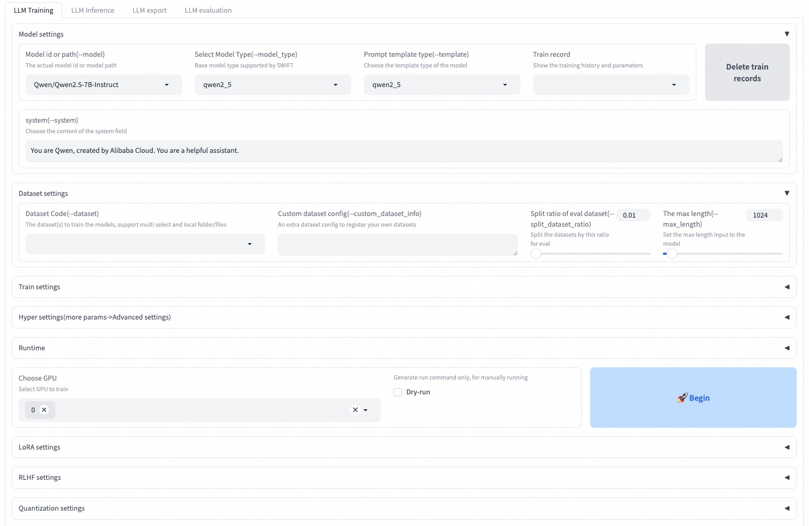

SWIFT (Scalable lightWeight Infrastructure for Fine-Tuning)

ModelScope Community Website
中文 ｜ English


Paper ｜ English Documentation ｜ 中文文档
📖 Table of Contents
☎ Groups
You can contact us and communicate with us by adding our group:
WeChat Group |
|
|---|---|
|
|


📝 Introduction
🍲 ms-swift is a large model and multimodal large model fine-tuning and deployment framework provided by the ModelScope community. It now supports training (pre-training, fine-tuning, human alignment), inference, evaluation, quantization, and deployment for 600+ text-only large models and 400+ multimodal large models. Large models include: Qwen3, Qwen3.5, InternLM3, GLM4.5, Mistral, DeepSeek-R1, Llama4, etc. Multimodal large models include: Qwen3-VL, Qwen3-Omni, Llava, InternVL3.5, MiniCPM-V-4, Ovis2.5, GLM4.5-V, DeepSeek-VL2, etc.
🍔 In addition, ms-swift integrates the latest training technologies, including Megatron parallelism techniques such as TP, PP, CP, EP to accelerate training, as well as numerous GRPO algorithm family reinforcement learning algorithms including: GRPO, DAPO, GSPO, SAPO, CISPO, RLOO, Reinforce++, etc. to enhance model intelligence. ms-swift supports a wide range of training tasks, including preference learning algorithms such as DPO, KTO, RM, CPO, SimPO, ORPO, as well as Embedding, Reranker, and sequence classification tasks. ms-swift provides full-pipeline support for large model training, including acceleration for inference, evaluation, and deployment modules using vLLM, SGLang, and LMDeploy, as well as model quantization using GPTQ, AWQ, BNB, and FP8 technologies.
Why Choose ms-swift?
🍎 Model Types: Supports 600+ text-only large models, 400+ multimodal large models, and All-to-All full modality models from training to deployment full pipeline, with Day-0 support for popular models.
Dataset Types: Built-in 150+ datasets for pre-training, fine-tuning, human alignment, multimodal and various other tasks, with support for custom datasets. Users only need to prepare datasets for one-click training.
Hardware Support: Supports A10/A100/H100, RTX series, T4/V100, CPU, MPS, and domestic hardware Ascend NPU, etc.
Lightweight Training: Supports lightweight fine-tuning methods such as LoRA, QLoRA, DoRA, LoRA+, LLaMAPro, LongLoRA, LoRA-GA, ReFT, RS-LoRA, Adapter, LISA, etc.
Quantized Training: Supports training on BNB, AWQ, GPTQ, AQLM, HQQ, EETQ quantized models, requiring only 9GB training resources for 7B models.
Memory Optimization: GaLore, Q-Galore, UnSloth, Liger-Kernel, Flash-Attention 2/3, and Ulysses and Ring-Attention sequence parallelism techniques support, reducing memory consumption for long-text training.
Distributed Training: Supports distributed data parallelism (DDP), device_map simple model parallelism, DeepSpeed ZeRO2 ZeRO3, FSDP/FSDP2, and Megatron distributed training technologies.
🍓 Multimodal Training: Supports multimodal packing technology to improve training speed by 100%+, supports mixed modality data training with text, images, video and audio, and supports independent control of vit/aligner/llm.
Agent Training: Supports Agent templates, allowing one dataset to be used for training different models.
🍊 Training Tasks: Supports pre-training and instruction fine-tuning, as well as training tasks such as DPO, GKD, KTO, RM, CPO, SimPO, ORPO, and supports Embedding/Reranker and sequence classification tasks.
🥥 Megatron Parallelism: Provides TP/PP/SP/CP/ETP/EP/VPP parallel strategies to significantly boost MoE model training speed. Supports full-parameter and LoRA training methods for 300+ pure text large models and 100+ multimodal large models. Supports CPT/SFT/GRPO/DPO/KTO/RM training tasks.
🍉 Reinforcement Learning: Built-in rich GRPO family algorithms, including GRPO, DAPO, GSPO, SAPO, CISPO, CHORD, RLOO, Reinforce++, etc. Supports synchronous and asynchronous vLLM engine inference acceleration, with extensible reward functions, multi-turn inference Schedulers, and environments through plugins.
Full-Pipeline Capabilities: Covers the entire workflow of training, inference, evaluation, quantization, and deployment.
UI Training: Provides Web-UI interface for training, inference, evaluation, and quantization, completing the full pipeline for large models.
Inference Acceleration: Supports Transformers, vLLM, SGLang, and LmDeploy inference acceleration engines, providing OpenAI interfaces for accelerating inference, deployment, and evaluation modules.
Model Evaluation: Uses EvalScope as the evaluation backend, supporting 100+ evaluation datasets for evaluating text-only and multimodal models.
Model Quantization: Supports quantization export for AWQ, GPTQ, FP8, and BNB. Exported models support inference acceleration using vLLM/SGLang/LmDeploy.
🎉 News
🎁 2026.03.03: ms-swift v4.0 major version is officially released. For release notes, please refer to here. You can provide your suggestions to us in this issue. Thank you for your support.
🎁 2025.11.14: Megatron GRPO is now available! Check out the docs and examples.
🎁 2025.11.04: Support for Mcore-Bridge, making Megatron training as simple and easy to use as transformers.
🎁 2025.10.28: Ray here.
🎁 2025.09.07: Added support for CHORD training algorithm. See the documentation.
🎁 2025.09.06: Ulysses can now be used with ring-attention, allowing sequences to be sharded into any number of chunks (no longer limited by the number of heads). The argument remains
--sequence_parallel_size N.🎁 2025.09.02: Megatron-SWIFT now supports multimodal model training. Documentation can be found here.
🎁 2025.08.12: Support Dynamic Fine-Tuning(DFT) in SFT training, use parameter
--enable_dft_loss true. Training scripts can be found here.🎁 2025.07.09: Megatron-SWIFT supports LoRA training. Compared to ms-swift, it achieves significant speedup on MoE models. Training scripts can be found here.
🎁 2025.06.23: Fine-tuning of reranker models is supported. Training scripts can be found here: Reranker.
🎁 2025.06.15: Support for GKD training on both pure text large models and multimodal models. Training scripts can be found here: Pure Text, Multimodal.
More
🎁 2025.06.11: Support for using Megatron parallelism techniques for RLHF training. The training script can be found here.
🎁 2025.05.29: Support sequence parallel in pretrain, sft, dpo and grpo, check script here.
🎁 2025.05.11: GRPO now supports custom processing logic for reward models. See the GenRM example here.
🎁 2025.04.15: The ms-swift paper has been accepted by AAAI 2025. You can find the paper at this link.
🎁 2025.03.23: Multi-round GRPO is now supported for training multi-turn dialogue scenarios (e.g., agent tool calling). Please refer to the doc.
🎁 2025.03.16: Support for Megatron's parallel training techniques is now available. Please see the Megatron-SWIFT training documentation.
🎁 2025.03.15: Fine-tuning of embedding models for both pure text and multimodal models is supported. Please check the training script.
🎁 2025.03.05: The hybrid mode for GRPO is supported, with a script for training a 72B model on 4 GPUs (4*80G) available here. Tensor parallelism with vllm is also supported, with the training script available here.
🎁 2025.02.21: The GRPO algorithm now supports LMDeploy, with the training script available here. Additionally, the performance of the GRPO algorithm has been tested, achieving a training speed increase of up to 300% using various tricks. Please check the WanDB table here.
🎁 2025.02.21: The
swift samplecommand is now supported. The reinforcement fine-tuning script can be found here, and the large model API distillation sampling script is available here.🔥 2025.02.12: Support for the GRPO (Group Relative Policy Optimization) training algorithm has been added. Documentation is available here.
🎁 2024.12.04: Major update to ms-swift 3.0. Please refer to the release notes and changes.
🎉 2024.08.12: The ms-swift paper has been published on arXiv and can be read here.
🔥 2024.08.05: Support for using evalscope as a backend for evaluating large models and multimodal models.
🔥 2024.07.29: Support for using vllm and lmdeploy to accelerate inference for large models and multimodal models. When performing infer/deploy/eval, you can specify
--infer_backend vllm/lmdeploy.🔥 2024.07.24: Support for human preference alignment training for multimodal large models, including DPO/ORPO/SimPO/CPO/KTO/RM/PPO.
🔥 2024.02.01: Support for Agent training! The training algorithm is derived from this paper.
🛠️ Installation
To install using pip:
pip install ms-swift -U
# Using uv
pip install uv
uv pip install ms-swift -U --torch-backend=auto
To install from source:
# pip install git+https://github.com/modelscope/ms-swift.git
git clone https://github.com/modelscope/ms-swift.git
cd ms-swift
# The main branch is for swift 4.x. To install swift 3.x, please run the following command:
# git checkout release/3.12
pip install -e .
# Using uv
uv pip install -e . --torch-backend=auto
Running Environment:
Range |
Recommended |
Notes |
|
|---|---|---|---|
python |
>=3.9 |
3.11/3.12 |
|
cuda |
cuda12 |
No need to install if using CPU, NPU, MPS |
|
torch |
>=2.0 |
2.8.0/2.10.0 |
|
transformers |
>=4.33 |
4.57.6/5.2.0 |
|
modelscope |
>=1.23 |
||
peft |
>=0.11,<0.19 |
||
flash_attn |
2.8.3/3.0.0b1 |
||
trl |
>=0.15,<0.30 |
0.28.0 |
RLHF |
deepspeed |
>=0.14 |
0.18.8 |
Training |
vllm |
>=0.5.1 |
0.11.0/0.17.1 |
Inference/Deployment |
sglang |
>=0.4.6 |
Inference/Deployment |
|
lmdeploy |
>=0.5 |
0.10.1 |
Inference/Deployment |
evalscope |
>=1.0 |
Evaluation |
|
gradio |
5.32.1 |
Web-UI/App |
For more optional dependencies, you can refer to here.
🚀 Quick Start
10 minutes of self-cognition fine-tuning of Qwen3-4B-Instruct-2507 on a single 3090 GPU:
Command Line Interface (Recommended)
# 13GB
CUDA_VISIBLE_DEVICES=0 \
swift sft \
--model Qwen/Qwen3-4B-Instruct-2507 \
--tuner_type lora \
--dataset 'AI-ModelScope/alpaca-gpt4-data-zh#500' \
'AI-ModelScope/alpaca-gpt4-data-en#500' \
'swift/self-cognition#500' \
--torch_dtype bfloat16 \
--num_train_epochs 1 \
--per_device_train_batch_size 1 \
--per_device_eval_batch_size 1 \
--learning_rate 1e-4 \
--lora_rank 8 \
--lora_alpha 32 \
--target_modules all-linear \
--gradient_accumulation_steps 16 \
--eval_steps 50 \
--save_steps 50 \
--save_total_limit 2 \
--logging_steps 5 \
--max_length 2048 \
--output_dir output \
--warmup_ratio 0.05 \
--dataloader_num_workers 4 \
--model_author swift \
--model_name swift-robot
Tips:
If you want to train with a custom dataset, you can refer to this guide to organize your dataset format and specify
--dataset <dataset_path>.The
--model_authorand--model_nameparameters are only effective when the dataset includesswift/self-cognition.To train with a different model, simply modify
--model <model_id/model_path>.By default, ModelScope is used for downloading models and datasets. If you want to use HuggingFace, simply specify
--use_hf true.
After training is complete, use the following command to infer with the trained weights:
Here,
--adaptersshould be replaced with the last checkpoint folder generated during training. Since the adapters folder contains the training parameter fileargs.json, there is no need to specify--model,--systemseparately; Swift will automatically read these parameters. To disable this behavior, you can set--load_args false.
# Using an interactive command line for inference.
CUDA_VISIBLE_DEVICES=0 \
swift infer \
--adapters output/vx-xxx/checkpoint-xxx \
--stream true \
--temperature 0 \
--max_new_tokens 2048
# merge-lora and use vLLM for inference acceleration
CUDA_VISIBLE_DEVICES=0 \
swift infer \
--adapters output/vx-xxx/checkpoint-xxx \
--stream true \
--merge_lora true \
--infer_backend vllm \
--vllm_max_model_len 8192 \
--temperature 0 \
--max_new_tokens 2048
Finally, use the following command to push the model to ModelScope:
CUDA_VISIBLE_DEVICES=0 \
swift export \
--adapters output/vx-xxx/checkpoint-xxx \
--push_to_hub true \
--hub_model_id '<your-model-id>' \
--hub_token '<your-sdk-token>' \
--use_hf false
Web-UI
The Web-UI is a zero-threshold training and deployment interface solution based on Gradio interface technology. For more details, you can check here.
SWIFT_UI_LANG=en swift web-ui

Using Python
ms-swift also supports training and inference using Python. Below is pseudocode for training and inference. For more details, you can refer to here.
Training:
from peft import LoraConfig, get_peft_model
from swift import get_model_processor, get_template, load_dataset, EncodePreprocessor
from swift.trainers import Seq2SeqTrainer, Seq2SeqTrainingArguments
# Retrieve the model and template, and add a trainable LoRA module
model, tokenizer = get_model_processor(model_id_or_path, ...)
template = get_template(tokenizer, ...)
lora_config = LoraConfig(...)
model = get_peft_model(model, lora_config)
# Download and load the dataset, and encode the text into tokens
train_dataset, val_dataset = load_dataset(dataset_id_or_path, ...)
train_dataset = EncodePreprocessor(template=template)(train_dataset, num_proc=num_proc)
val_dataset = EncodePreprocessor(template=template)(val_dataset, num_proc=num_proc)
# Train the model
training_args = Seq2SeqTrainingArguments(...)
trainer = Seq2SeqTrainer(
model=model,
args=training_args,
template=template,
train_dataset=train_dataset,
eval_dataset=val_dataset,
)
trainer.train()
Inference:
from swift import TransformersEngine, InferRequest, RequestConfig
# Perform inference using the native Transformers engine
engine = TransformersEngine(model_id_or_path, adapters=[lora_checkpoint])
infer_request = InferRequest(messages=[{'role': 'user', 'content': 'who are you?'}])
request_config = RequestConfig(max_tokens=max_new_tokens, temperature=temperature)
resp_list = engine.infer([infer_request], request_config)
print(f'response: {resp_list[0].choices[0].message.content}')
✨ Usage
Here is a minimal example of training to deployment using ms-swift. For more details, you can check the examples.
If you want to use other models or datasets (including multimodal models and datasets), you only need to modify
--modelto specify the corresponding model's ID or path, and modify--datasetto specify the corresponding dataset's ID or path.By default, ModelScope is used for downloading models and datasets. If you want to use HuggingFace, simply specify
--use_hf true.
Useful Links |
|---|
Training
Supported Training Methods:
Method |
Full-Parameter |
LoRA |
QLoRA |
Deepspeed |
Multi-Machine |
Multimodal |
|---|---|---|---|---|---|---|
✅ |
✅ |
✅ |
✅ |
✅ |
✅ |
|
✅ |
||||||
✅ |
✅ |
✅ |
✅ |
✅ |
✅ |
|
✅ |
✅ |
✅ |
✅ |
✅ |
||
✅ |
✅ |
✅ |
✅ |
✅ |
❌ |
|
✅ |
✅ |
✅ |
✅ |
✅ |
||
✅ |
✅ |
✅ |
✅ |
✅ |
||
✅ |
✅ |
✅ |
✅ |
✅ |
✅ |
|
✅ |
✅ |
✅ |
✅ |
✅ |
✅ |
|
✅ |
✅ |
✅ |
✅ |
✅ |
✅ |
|
✅ |
✅ |
✅ |
✅ |
✅ |
✅ |
|
✅ |
✅ |
✅ |
✅ |
✅ |
✅ |
|
✅ |
✅ |
✅ |
✅ |
✅ |
✅ |
|
✅ |
✅ |
✅ |
✅ |
✅ |
✅ |
Pre-training:
# 8*A100
NPROC_PER_NODE=8 \
CUDA_VISIBLE_DEVICES=0,1,2,3,4,5,6,7 \
swift pt \
--model Qwen/Qwen3-4B-Base \
--dataset swift/chinese-c4 \
--streaming true \
--tuner_type full \
--deepspeed zero2 \
--output_dir output \
--max_steps 10000 \
...
Fine-tuning:
CUDA_VISIBLE_DEVICES=0 swift sft \
--model Qwen/Qwen3-4B-Instruct-2507 \
--dataset AI-ModelScope/alpaca-gpt4-data-en \
--tuner_type lora \
--output_dir output \
...
RLHF:
CUDA_VISIBLE_DEVICES=0 swift rlhf \
--rlhf_type dpo \
--model Qwen/Qwen3-4B-Instruct-2507 \
--dataset hjh0119/shareAI-Llama3-DPO-zh-en-emoji \
--tuner_type lora \
--output_dir output \
...
Megatron-SWIFT
ms-swift supports using Megatron parallelism techniques to accelerate training, including large-scale cluster training and MoE model training. The following training methods are supported:
Method |
Full-Parameter |
LoRA |
MoE |
Multimodal |
FP8 |
|---|---|---|---|---|---|
Pre-training |
✅ |
✅ |
✅ |
✅ |
✅ |
✅ |
✅ |
✅ |
✅ |
✅ |
|
✅ |
✅ |
✅ |
✅ |
✅ |
|
✅ |
✅ |
✅ |
✅ |
✅ |
|
✅ |
✅ |
✅ |
✅ |
✅ |
|
✅ |
✅ |
✅ |
✅ |
✅ |
|
✅ |
✅ |
✅ |
✅ |
✅ |
|
✅ |
✅ |
✅ |
✅ |
✅ |
|
✅ |
✅ |
✅ |
✅ |
✅ |
|
✅ |
✅ |
✅ |
✅ |
✅ |
NPROC_PER_NODE=2 CUDA_VISIBLE_DEVICES=0,1 megatron sft \
--model Qwen/Qwen3-4B-Instruct-2507 \
--save_safetensors true \
--dataset AI-ModelScope/alpaca-gpt4-data-zh \
--tuner_type lora \
--output_dir output \
...
Reinforcement Learning
ms-swift supports a rich set of GRPO family algorithms:
Method |
Full-Parameter |
LoRA |
Multimodal |
Multi-Machine |
|---|---|---|---|---|
✅ |
✅ |
✅ |
✅ |
|
✅ |
✅ |
✅ |
✅ |
|
✅ |
✅ |
✅ |
✅ |
|
✅ |
✅ |
✅ |
✅ |
|
✅ |
✅ |
✅ |
✅ |
|
✅ |
✅ |
✅ |
✅ |
|
✅ |
✅ |
✅ |
✅ |
|
✅ |
✅ |
✅ |
✅ |
CUDA_VISIBLE_DEVICES=0,1,2,3 NPROC_PER_NODE=4 \
swift rlhf \
--rlhf_type grpo \
--model Qwen/Qwen3-4B-Instruct-2507 \
--tuner_type lora \
--use_vllm true \
--vllm_mode colocate \
--dataset AI-MO/NuminaMath-TIR#10000 \
--output_dir output \
...
Inference
CUDA_VISIBLE_DEVICES=0 swift infer \
--model Qwen/Qwen3-4B-Instruct-2507 \
--stream true \
--infer_backend transformers \
--max_new_tokens 2048
Interface Inference
CUDA_VISIBLE_DEVICES=0 swift app \
--model Qwen/Qwen3-4B-Instruct-2507 \
--stream true \
--infer_backend transformers \
--max_new_tokens 2048
Deployment
CUDA_VISIBLE_DEVICES=0 swift deploy \
--model Qwen/Qwen3-4B-Instruct-2507 \
--infer_backend vllm
Sampling
CUDA_VISIBLE_DEVICES=0 swift sample \
--model Qwen/Qwen3-4B-Instruct-2507 \
--sampler_engine transformers \
--num_return_sequences 5 \
--dataset AI-ModelScope/alpaca-gpt4-data-zh#5
Evaluation
CUDA_VISIBLE_DEVICES=0 swift eval \
--model Qwen/Qwen3-4B-Instruct-2507 \
--infer_backend sglang \
--eval_backend OpenCompass \
--eval_dataset ARC_c
Quantization
CUDA_VISIBLE_DEVICES=0 swift export \
--model Qwen/Qwen3-4B-Instruct-2507 \
--quant_method fp8 \
--dataset AI-ModelScope/alpaca-gpt4-data-zh \
--output_dir Qwen3-4B-Instruct-2507-FP8
Push Model
swift export \
--model <model-path> \
--push_to_hub true \
--hub_model_id '<model-id>' \
--hub_token '<sdk-token>'
🏛 License
This framework is licensed under the Apache License (Version 2.0). For models and datasets, please refer to the original resource page and follow the corresponding License.
📎 Citation
@misc{zhao2024swiftascalablelightweightinfrastructure,
title={SWIFT:A Scalable lightWeight Infrastructure for Fine-Tuning},
author={Yuze Zhao and Jintao Huang and Jinghan Hu and Xingjun Wang and Yunlin Mao and Daoze Zhang and Zeyinzi Jiang and Zhikai Wu and Baole Ai and Ang Wang and Wenmeng Zhou and Yingda Chen},
year={2024},
eprint={2408.05517},
archivePrefix={arXiv},
primaryClass={cs.CL},
url={https://arxiv.org/abs/2408.05517},
}